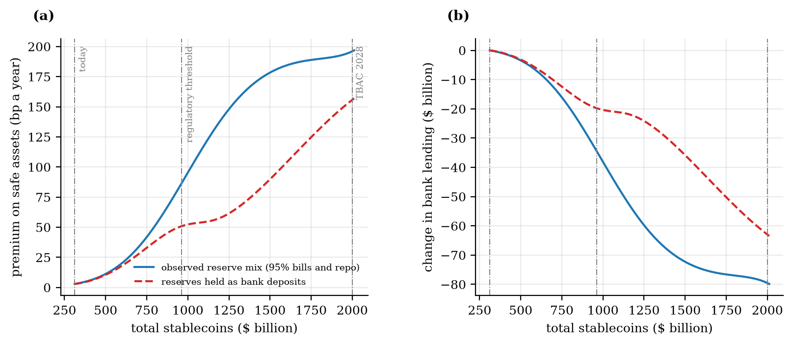
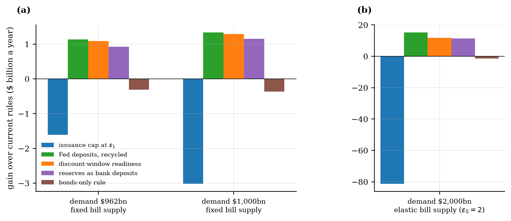

Coins Made of Bank Collateral
Where US stablecoin reserves start to crowd out the collateral banks hold for liquidity rules, and which of the rules now being written would help
Working paper — When Do Stablecoins Crowd Out Bank Collateral? (October 2026 draft).
The question
Dollar stablecoins outstanding reached $311 billion in October 2026, and their issuers hold reserves almost entirely in Treasury bills, bill-backed repo and government money funds — about $200 billion of bills and bill repo at the end of 2025. The Treasury’s advisory committee projects $2 trillion of coins and $1 trillion of issuer bill holdings by 2028. The same bills are the high-quality liquid assets that banks hold against stressed outflows under the liquidity coverage ratio. The twenty-one US bank holding companies subject to the ratio disclose $4.54 trillion of such assets against $3.91 trillion of net 30-day outflows: a slack of $630 billion. The stock of coins was negligible against that slack in 2019; it is now 32 percent of the stock at which the slack would be used up.
The paper asks when issuance starts to crowd out the collateral banks hold for liquidity, what that does to bank credit, and which of the rules now being written — on issuers’ reserves, on the deposits they place with banks, and on the banks that receive them — would help. The existing answer, in the models of Hofmann, Kaldorf and Rottner (2026) and the evidence of Ahmed and Aldasoro (2026), is a price channel with a small effect on lending. The paper shows that this is the early part of a longer schedule once the liquidity rule is modelled as it works: a bank must meet the ratio every business day, so it holds a buffer, buys compliance with term funding or at the discount window — at the window’s spread plus the stigma of borrowing — up to the collateral it can pledge, and deleverages beyond that. Each cost is a probability times a unit cost, so the value of a safe asset to the banking system rises smoothly as the slack falls, not at a cliff. The stock of coins is not a parameter but what households demand at the bill yield the model itself produces. The model is calibrated to October 2026 data, and its predictions are checked against issuer attestations, banks’ liquidity disclosures, call reports and weekly bill yields.
Headline figures
| Item | Value |
|---|---|
| Stablecoins outstanding, October 2026 | $311 billion |
| Disclosed liquidity slack of the 21 banks under the ratio, 2026Q2 | $630 billion |
| Premium on bank collateral: today / 25 bp / regulatory threshold / 100 bp | 3 bp / $661 bn / $961 bn (86 bp) / $1,036 bn |
| With $1 trillion of new issuance: premium, lending, as bills (as bank deposits) | 158 bp, −$64 bn (67 bp, −$26 bn) |
| Largest demand the system absorbs, observed reserve mix | $1,949 billion; $2.0–3.1 trillion if issuers rebalance; none if holders compare coins with deposit rates |
| Welfare gain at $1 trillion of demand: Fed deposits (recycled) / discount-window readiness / deposit reserves / cap | +1.3 / +1.3 / +1.2 / −3.0 $ billion a year |
| Banks holding Circle’s cash before March 2023 that were subject to the ratio | 0 of 6 |
| Bill-buying issuer dollars, three-month bill yield after four weeks (non-bill dollars) | −11 to −19 bp per $3.5 bn (no decline) |
Five findings
1. Crowding out begins well before the regulatory threshold. The premium on safe assets is 3 basis points at today’s stock. It reaches 25 basis points at a total stock of $661 billion — about twice today’s — and 86 at the threshold of $961 billion, where the disclosed slack is used up. The threshold is the midpoint of the crowding-out zone, not its start. With $1 trillion of new issuance the premium is 158 basis points, bank lending is $64 billion lower and the expected cost of stress liquidations is $4.1 billion a year.

2. Bills crowd out more than bank deposits. A bill purchase removes a unit of collateral from the banking system. An issuer deposit makes the receiving bank hold safe assets against it — a bank funded mainly by issuer deposits becomes a narrow bank — but adds only its actual run-off to stress outflows. With $1 trillion of new issuance held as bank deposits instead of bills, the premium is 67 basis points rather than 158 and the lending loss $26 billion rather than $64 billion: bills crowd out 2.4 times as much. Competitive pricing already points issuers the same way: once collateral is scarce, banks pay more for issuer deposits than bills return (by 55 basis points at the $1 trillion level), so issuers that rebalance absorb less. Today they hold 4.6 percent of reserves as bank deposits.
3. There can be a largest demand the system absorbs. Coin demand rises as bill yields fall, and collateral scarcity lowers bill yields, so one more coin draws in further coins. While the premium path is gentle the feedback is damped; once banks’ term-funding capacity is exhausted and deleveraging steepens the path, one coin can draw in more than one further coin, and issuance growing from today’s stock no longer settles. With the observed reserve mix that point — the fold — is at a demand of $1,949 billion, just short of the 2028 projection. It is a conditional result: if issuers rebalance toward deposits as deposit pricing leads them to, the fold moves to $2.0–3.1 trillion; discount-window readiness moves it to $3.6 trillion; and if coin holders compared coins with a bank deposit rate rather than a money-market yield, there would be no fold at all. What does not depend on these assumptions is that the premium rises steeply well before it.
4. Instruments that change what a coin absorbs beat instruments that remove coins. Against current rules, at $1 trillion of demand, a requirement to hold part of the reserves at the Federal Reserve — an asset the GENIUS Act already permits — gains $1.3 billion a year if the Federal Reserve lends the funds back to banks, and nothing if it does not; discount-window readiness, under which every bank pre-pledges collateral for 90 percent of its outflows, gains $1.3 billion, so the two are tied; reserves held as bank deposits gain $1.2 billion; an issuance cap at the threshold loses $3.0 billion. At $2 trillion with a bill supply that responds to the price, the gains are $15.2, $12.3 and $11.3 billion and the cap loses $81 billion. The Federal Reserve deposit share leads at that level only if more than 94.6 percent of the deposits are recycled and holding them costs the Federal Reserve less than 21 basis points a year; discount-window readiness needs no such condition. The cap lowers welfare wherever it binds, in every calibration, because it rations coins that households demand.

5. The run-off rate and the concentration limit address a different problem, and the wrong quantity. A run-off rate on issuer deposits and the FDIC’s proposed 40 percent limit on an issuer’s exposure to any one bank do nothing for collateral while issuers hold bills. Their case is the run on the issuer that forces its partner bank to raise cash, and there the binding quantity is the partner bank’s equity. A specialist partner with $1.2 billion of equity, modelled on the crypto-focused banks of 2022, cannot be protected by any run-off rate beyond $24–32 billion of issuer deposits: the fire-sale loss on the cover it would have to sell, and the loans it would then have to liquidate, exhaust its equity. A 40 percent cap written on the issuer’s side protects such a bank only up to $60–79 billion of issuance; at the size of the largest issuer today, the per-bank limit that would protect it is 13–17 percent. A limit that scales with the receiving bank’s equity, whatever its regulatory category, does the work that neither a uniform rate nor a uniform cap can do — the paper’s answer to Question 59 of the FDIC’s proposal.
The evidence in brief
The public record lines up with the model’s structure, though none of it is a causal test. Every bank that held Circle’s cash before March 2023 — Silicon Valley Bank, Signature, Silvergate, Customers, New York Community and Citizens Trust — was outside the liquidity coverage ratio, which is where the model’s deposit pricing sends issuer deposits: a bank outside the ratio can lend part of them and pay more. Silvergate, the bank whose funding was dominated by such deposits, held cash and securities equal to 0.87 of its assets against a peer median of 0.27 and a loan share 55 points below its peers; it operated as a narrow bank, and the liquidity it held implies a run-off of 0.74 on those deposits. The model’s capital condition, evaluated with balance sheets public before the run, singles out Silvergate — digital-asset deposits 10.7 times its equity, failure at any fire-sale discount above 10 percent, a realized discount of 13.8 percent — and clears Signature (threshold 0.39) and Silicon Valley Bank, where Circle’s deposit was covered by cash and the failure ran the other way, from the bank to the issuer. The banks under the ratio have kept it above 1.04 in every quarter since 2018, as a probabilistic compliance cost implies. And in weekly data, issuer dollars that buy bills lower the three-month bill yield by 11–19 basis points per $3.5 billion for a few weeks, while the same issuers’ repo and deposit dollars do not; a lending response to issuer absorption is not detectable in the observed range, where the model predicts it to be negligible, but the estimates are imprecise.
Where the results are conditional
The threshold pools the slack across banks and assumes a collateral market that works without friction — the assumption that failed in September 2019; if slack did not move at all, the lowest-ratio bank would reach its floor after $225 billion of bill-backed issuance. The fold needs a demand response to bill yields (the estimated semi-elasticity has an interval that includes zero) and depends on the alternative coin holders compare coins with; the issuers’ reallocation response is proxied by Circle’s response between bills and repo. The model has one safe asset and does not separate reserves from bills, which the 2019 episode says matters. The bank-level evidence measures where issuer deposits sat and how they were held; it does not identify a causal effect.
What it means for the rules being written
- Composition matters more than quantity. The assets the GENIUS Act permits differ by a factor of about 2.4 in how much bank collateral a dollar of reserves removes, and deposit pricing already pushes issuers toward the assets that remove less.
- A Federal Reserve deposit option for issuers is worth having only if the funds are lent back to banks, almost in full; sterilized, it withdraws bank funding and is worth nothing.
- Discount-window readiness — collateral pre-pledged against stressed outflows, which the Federal Reserve has urged on banks since 2023 — is the one instrument that helps without a condition, and it moves the point at which issuance stops settling the furthest.
- An issuance cap lowers welfare at every stock: it rations a product households want to protect a collateral price that other instruments protect more cheaply.
- For the run risk, limit the receiving bank, not the issuer: a per-bank limit scaled to the bank’s equity, applied whatever its regulatory category, since the banks that held issuer deposits in 2023 were the ones the liquidity rules did not reach.
- What to watch: the aggregate slack of the banks under the ratio, and the stock of coins relative to the room it leaves — 32 percent today.
Data and code
All data are public: Tether’s and Circle’s attestations (118 reports), the LCR disclosures of the twenty-one reporting bank holding companies, FDIC call reports, the Federal Reserve’s H.8 and H.4.1 releases, FRED, the Treasury’s Monthly Statement of the Public Debt and DefiLlama. The empirical specifications were fixed before estimation. The analysis plans and the model and estimation code are available on request at hyunhak.kim@kookmin.ac.kr.
References
Ahmed, R. and Aldasoro, I. (2026). Stablecoins and safe asset prices. BIS Working Paper 1270.
Bech, M. L. and Keister, T. (2017). Liquidity regulation and the implementation of monetary policy. Journal of Monetary Economics, 92, 64–77.
Hofmann, B., Kaldorf, M. and Rottner, M. (2026). The macroeconomics of stablecoins. BIS Working Paper 1363.
Lee, M. J. and Tou, D. (2026). Stablecoin disintermediation. Federal Reserve Bank of New York Staff Report 1185.